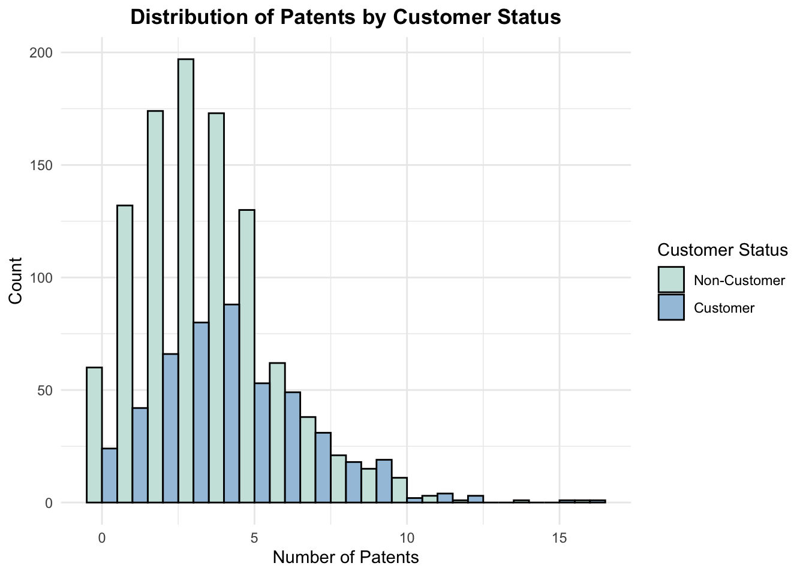
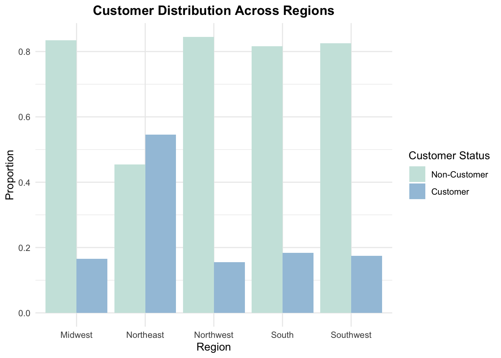
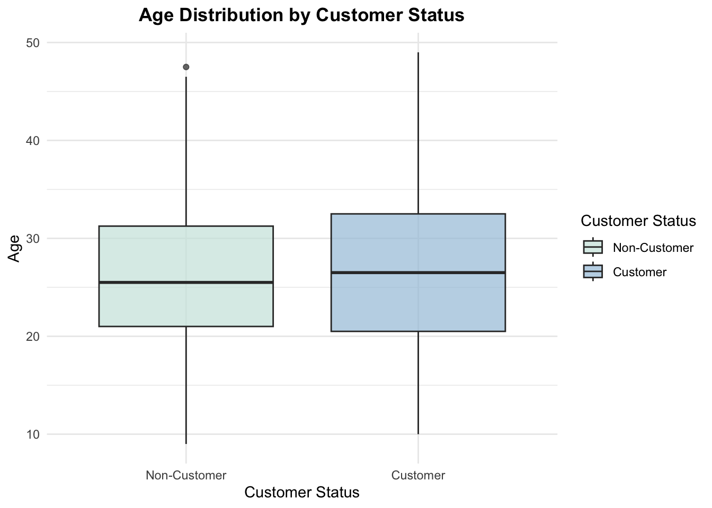
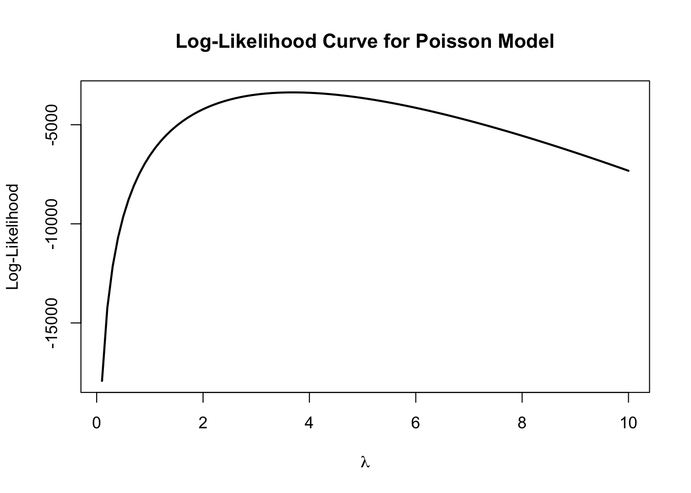
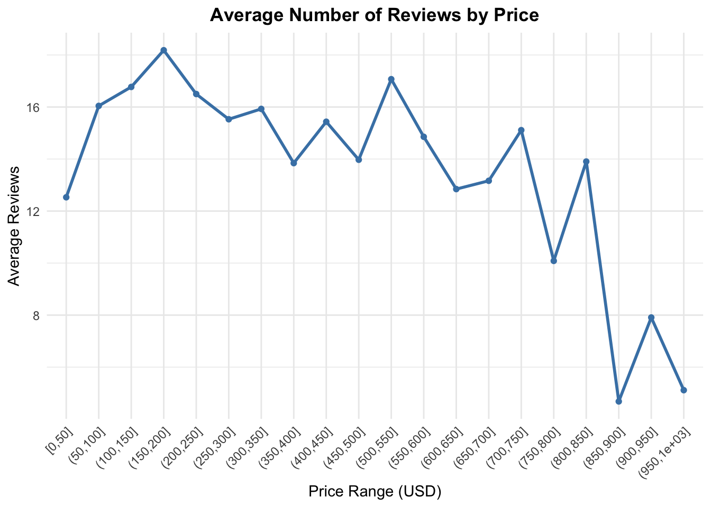
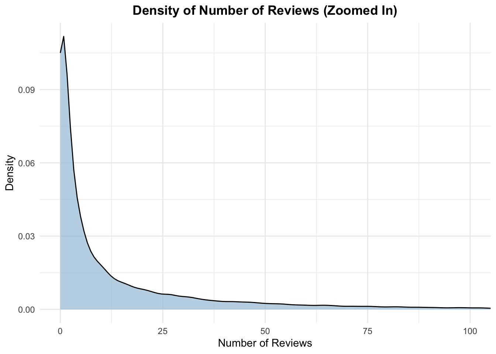

| …1 | id | days | last_scraped | host_since | room_type | bathrooms | bedrooms | price | number_of_reviews | review_scores_cleanliness | review_scores_location | review_scores_value | instant_bookable |
|---|---|---|---|---|---|---|---|---|---|---|---|---|---|
| 1 | 2515 | 3130 | 4/2/2017 | 9/6/2008 | Private room | 1 | 1 | 59 | 150 | 9 | 9 | 9 | FALSE |
| 2 | 2595 | 3127 | 4/2/2017 | 9/9/2008 | Entire home/apt | 1 | 0 | 230 | 20 | 9 | 10 | 9 | FALSE |
| 3 | 3647 | 3050 | 4/2/2017 | 11/25/2008 | Private room | 1 | 1 | 150 | 0 | NA | NA | NA | FALSE |
| 4 | 3831 | 3038 | 4/2/2017 | 12/7/2008 | Entire home/apt | 1 | 1 | 89 | 116 | 9 | 9 | 9 | FALSE |
| 5 | 4611 | 3012 | 4/2/2017 | 1/2/2009 | Private room | NA | 1 | 39 | 93 | 9 | 8 | 9 | TRUE |
| 6 | 5099 | 2981 | 4/2/2017 | 2/2/2009 | Entire home/apt | 1 | 1 | 212 | 60 | 9 | 9 | 9 | FALSE |
| 7 | 5107 | 2981 | 4/2/2017 | 2/2/2009 | Entire home/apt | 1 | 2 | 250 | 60 | 10 | 9 | 10 | FALSE |
| 8 | 5121 | 2980 | 4/2/2017 | 2/3/2009 | Private room | NA | 1 | 60 | 50 | 8 | 9 | 9 | FALSE |
| 9 | 5172 | 2980 | 4/2/2017 | 2/3/2009 | Entire home/apt | 1 | 1 | 129 | 53 | 9 | 10 | 9 | FALSE |
| 10 | 5178 | 2952 | 4/2/2017 | 3/3/2009 | Private room | 1 | 1 | 79 | 329 | 7 | 10 | 9 | FALSE |
Poisson Regression Examples
Blueprinty Case Study
Introduction
Blueprinty is a small firm that makes software for developing blueprints specifically for submitting patent applications to the US patent office. Their marketing team would like to make the claim that patent applicants using Blueprinty’s software are more successful in getting their patent applications approved. Ideal data to study such an effect might include the success rate of patent applications before using Blueprinty’s software and after using it. Unfortunately, such data is not available.
However, Blueprinty has collected data on 1,500 mature (non-startup) engineering firms. The data include each firm’s number of patents awarded over the last 5 years, regional location, age since incorporation, and whether or not the firm uses Blueprinty’s software. The marketing team would like to use this data to make the claim that firms using Blueprinty’s software are more successful in getting their patent applications approved.
Data
# Load required packages
library(readr)
library(dplyr)
library(knitr)
# Read the datasets
airbnb <- read_csv("/Users/sanjitkangovi/Desktop/mysite/blog/project4/airbnb.csv")
blueprinty <- read_csv("/Users/sanjitkangovi/Desktop/mysite/blog/project4/blueprinty.csv")Show Code
library(ggplot2)
ggplot(blueprinty, aes(x = patents, fill = as.factor(iscustomer))) +
geom_histogram(binwidth = 1, position = "dodge", color = "black") +
scale_fill_manual(
values = c("0" = "#cce5df", "1" = "#a3c4dc"), # light teal and soft blue
labels = c("Non-Customer", "Customer")
) +
labs(
title = "Distribution of Patents by Customer Status",
x = "Number of Patents",
y = "Count",
fill = "Customer Status"
) +
theme_minimal()+
theme(
plot.title = element_text(hjust = 0.5, face = "bold"))
Show Code
blueprinty %>%
group_by(iscustomer) %>%
summarise(
mean_patents = mean(patents, na.rm = TRUE),
count = n()
) %>%
kable(caption = "Average Number of Patents by Customer Status")| iscustomer | mean_patents | count |
|---|---|---|
| 0 | 3.473013 | 1019 |
| 1 | 4.133056 | 481 |
Comparison of Patents by Customer Status
Show Code
blueprinty %>%
group_by(region, iscustomer) %>%
summarise(n = n(), .groups = "drop") %>%
group_by(region) %>%
mutate(prop = n / sum(n)) %>%
ggplot(aes(x = region, y = prop, fill = as.factor(iscustomer))) +
geom_col(position = "dodge") +
scale_fill_manual(values = c("0" = "#cce5df", "1" = "#a3c4dc"),
labels = c("Non-Customer", "Customer")) +
labs(
title = "Customer Distribution Across Regions",
x = "Region",
y = "Proportion",
fill = "Customer Status"
) +
theme_minimal() +
theme(
plot.title = element_text(hjust = 0.5, face = "bold")
)
Show Code
#| echo: false
#| message: false
#| warning: false
#| fig-cap: "Age Distribution by Customer Status"
ggplot(blueprinty, aes(x = as.factor(iscustomer), y = age, fill = as.factor(iscustomer))) +
geom_boxplot(alpha = 0.7) +
scale_fill_manual(values = c("0" = "#cce5df", "1" = "#a3c4dc"),
labels = c("Non-Customer", "Customer")) +
labs(
title = "Age Distribution by Customer Status",
x = "Customer Status",
y = "Age",
fill = "Customer Status"
) +
scale_x_discrete(labels = c("0" = "Non-Customer", "1" = "Customer")) +
theme_minimal() +
theme(
plot.title = element_text(hjust = 0.5, face = "bold")
)
Show Code
blueprinty %>%
group_by(iscustomer) %>%
summarise(
avg_age = mean(age, na.rm = TRUE),
count = n()
) %>%
kable(caption = "Average Age by Customer Status")| iscustomer | avg_age | count |
|---|---|---|
| 0 | 26.10157 | 1019 |
| 1 | 26.90021 | 481 |
Estimation of Simple Poisson Model
Since our outcome variable of interest can only be small integer values per a set unit of time, we can use a Poisson density to model the number of patents awarded to each engineering firm over the last 5 years. We start by estimating a simple Poisson model via Maximum Likelihood.
Let \(Y_1, Y_2, \dots, Y_n \overset{iid}{\sim} \text{Poisson}(\lambda)\). The probability mass function for each observation is:
\[ f(Y_i \mid \lambda) = \frac{e^{-\lambda} \lambda^{Y_i}}{Y_i!} \]
Then, the likelihood function for the entire sample is:
\[ \mathcal{L}(\lambda \mid Y_1, \dots, Y_n) = \prod_{i=1}^n \frac{e^{-\lambda} \lambda^{Y_i}}{Y_i!} = e^{-n\lambda} \lambda^{\sum_{i=1}^n Y_i} \prod_{i=1}^n \frac{1}{Y_i!} \]
Or, more compactly:
\[ \mathcal{L}(\lambda \mid \mathbf{Y}) = e^{-n\lambda} \lambda^{\sum Y_i} \prod_{i=1}^n \frac{1}{Y_i!} \]
The code for log-likelihood function for the Poisson model is
poisson_loglikelihood <- function(lambda, Y) {
if (lambda <= 0) return(-Inf)
sum(-lambda + Y * log(lambda) - lfactorial(Y))
}Show Code
# Use observed Y from your dataset
Y <- blueprinty$patents
# Range of lambda values to evaluate
lambda_vals <- seq(0.1, 10, by = 0.1)
# Compute log-likelihood at each lambda
loglik_vals <- sapply(lambda_vals, function(lam) poisson_loglikelihood(lam, Y))
# Plot
plot(lambda_vals, loglik_vals, type = "l", lwd = 2,
xlab = expression(lambda), ylab = "Log-Likelihood",
main = "Log-Likelihood Curve for Poisson Model")
Let \(Y_1, Y_2, \dots, Y_n \overset{iid}{\sim} \text{Poisson}(\lambda)\), and recall that the log-likelihood function is:
\[ \ell(\lambda) = \sum_{i=1}^n \left( -\lambda + Y_i \log \lambda - \log Y_i! \right) = -n\lambda + \left(\sum_{i=1}^n Y_i\right) \log \lambda + \text{const} \]
To find the MLE, we take the derivative with respect to \(\lambda\) and set it equal to zero:
\[ \frac{d\ell}{d\lambda} = -n + \frac{\sum Y_i}{\lambda} = 0 \]
Solving for \(\lambda\) gives:
\[ \lambda_{\text{MLE}} = \frac{1}{n} \sum_{i=1}^n Y_i = \bar{Y} \]
This result makes intuitive sense because the mean of a Poisson distribution is \(\lambda\), so the sample mean \(\bar{Y}\) is a natural estimator.
# Define a negative log-likelihood (since optim minimizes)
neg_loglik <- function(lambda, Y) {
-poisson_loglikelihood(lambda, Y)
}
# Call optim to find the MLE for lambda
optim_result <- optim(
par = 1, # initial guess
fn = neg_loglik,
Y = blueprinty$patents, # data passed to function
method = "Brent",
lower = 0.001, upper = 20 # bounds for lambda
)
# Print result
optim_result$par # this is the MLE for lambda[1] 3.684667Estimation of Poisson Regression Model
Next, we extend our simple Poisson model to a Poisson Regression Model such that \(Y_i = \text{Poisson}(\lambda_i)\) where \(\lambda_i = \exp(X_i'\beta)\). The interpretation is that the success rate of patent awards is not constant across all firms (\(\lambda\)) but rather is a function of firm characteristics \(X_i\). Specifically, we will use the covariates age, age squared, region, and whether the firm is a customer of Blueprinty.
poisson_regression_likelihood <- function(beta, Y, X) {
# Compute the linear predictor: eta = X %*% beta
eta <- X %*% beta
# Apply inverse link function: lambda_i = exp(eta_i)
lambda <- exp(eta)
# Compute log-likelihood
loglik <- sum(-lambda + Y * log(lambda) - lfactorial(Y))
return(loglik)
}The table below shows the maximum likelihood estimates and standard errors from the Poisson regression model.
| Coefficient | Std_Error | |
|---|---|---|
| (Intercept) | -0.1257359 | 0.1122180 |
| age | 0.1157937 | 0.0063574 |
| age_sq | -0.0022287 | 0.0000771 |
| regionNortheast | -0.0245568 | 0.0433763 |
| regionNorthwest | -0.0348278 | 0.0529311 |
| regionSouth | -0.0054419 | 0.0524007 |
| regionSouthwest | -0.0377841 | 0.0471722 |
| iscustomer | 0.0606656 | 0.0320588 |
Show Code
# Refit the model (if needed)
glm_result <- glm(
patents ~ age + I(age^2) + region + iscustomer,
family = poisson(link = "log"),
data = blueprinty
)
# Create tidy coefficient table
coef_table <- data.frame(
Term = names(coef(glm_result)),
Estimate = round(coef(glm_result), 4),
Std_Error = round(sqrt(diag(vcov(glm_result))), 4),
z_value = round(coef(glm_result) / sqrt(diag(vcov(glm_result))), 2),
p_value = signif(2 * (1 - pnorm(abs(coef(glm_result) / sqrt(diag(vcov(glm_result)))))), 3)
)For comparison, the table below shows estimates and standard errors from R’s built-in glm() function using the Poisson family.
| Coefficient | Std_Error | |
|---|---|---|
| (Intercept) | -0.5089198 | 0.1831787 |
| age | 0.1486195 | 0.0138686 |
| I(age^2) | -0.0029705 | 0.0002580 |
| regionNortheast | 0.0291701 | 0.0436255 |
| regionNorthwest | -0.0175745 | 0.0537806 |
| regionSouth | 0.0565613 | 0.0526624 |
| regionSouthwest | 0.0505761 | 0.0471982 |
| iscustomer | 0.2075908 | 0.0308953 |
Estimate effect of Blueprinty’s software using counterfactual predictions
# Step 1: Create X matrices for iscustomer = 0 and iscustomer = 1
X_0 <- model.matrix(~ age + I(age^2) + region + iscustomer,
data = transform(blueprinty, iscustomer = 0))
X_1 <- model.matrix(~ age + I(age^2) + region + iscustomer,
data = transform(blueprinty, iscustomer = 1))
# Step 2: Predict lambda (expected number of patents) under both conditions
eta_0 <- X_0 %*% coef(glm_result)
eta_1 <- X_1 %*% coef(glm_result)
y_pred_0 <- exp(eta_0)
y_pred_1 <- exp(eta_1)
# Step 3: Compute average difference
diff <- y_pred_1 - y_pred_0
average_effect <- mean(diff)
# Display result
average_effect[1] 0.7927681
AirBnB Case Study
Introduction
AirBnB is a popular platform for booking short-term rentals. In March 2017, students Annika Awad, Evan Lebo, and Anna Linden scraped of 40,000 Airbnb listings from New York City. The data include the following variables:
Line plot: Average Reviews by Price Bin
library(dplyr)
library(ggplot2)
# Create price bins
airbnb_binned <- airbnb %>%
filter(price > 0, price <= 1000) %>% # remove extreme values
mutate(price_bin = cut(price, breaks = seq(0, 1000, by = 50), include.lowest = TRUE)) %>%
group_by(price_bin) %>%
summarise(avg_reviews = mean(number_of_reviews, na.rm = TRUE)) %>%
na.omit()
# Plot
ggplot(airbnb_binned, aes(x = price_bin, y = avg_reviews, group = 1)) +
geom_line(color = "steelblue", linewidth = 1) +
geom_point(color = "steelblue") +
labs(
title = "Average Number of Reviews by Price",
x = "Price Range (USD)",
y = "Average Reviews"
) +
theme_minimal() +
theme(
axis.text.x = element_text(angle = 45, hjust = 1),
plot.title = element_text(hjust = 0.5, face = "bold")
)
Density plot: Zoomed-in Number of Reviews
ggplot(airbnb, aes(x = number_of_reviews)) +
geom_density(fill = "#a3c4dc", alpha = 0.7) +
coord_cartesian(xlim = c(0, 100)) + # zoom in without removing data
labs(
title = "Density of Number of Reviews (Zoomed In)",
x = "Number of Reviews",
y = "Density"
) +
theme_minimal() +
theme(plot.title = element_text(hjust = 0.5, face = "bold"))
Handle missing values
# Remove rows with missing values in relevant predictors
airbnb_clean <- airbnb %>%
filter(
!is.na(bathrooms),
!is.na(bedrooms),
!is.na(price),
!is.na(review_scores_cleanliness),
!is.na(review_scores_location),
!is.na(review_scores_value),
!is.na(number_of_reviews),
!is.na(instant_bookable),
!is.na(room_type)
)Fit Poisson regression model for number of reviews
# Convert categorical to factors
airbnb_clean <- airbnb_clean %>%
mutate(
instant_bookable = factor(instant_bookable),
room_type = factor(room_type)
)
# Fit Poisson model
review_model <- glm(
number_of_reviews ~ price + bathrooms + bedrooms +
review_scores_cleanliness + review_scores_location + review_scores_value +
instant_bookable + room_type,
family = poisson(link = "log"),
data = airbnb_clean
)
# Summarize as clean table
coef_table <- data.frame(
Term = names(coef(review_model)),
Estimate = round(coef(review_model), 4),
Std_Error = round(sqrt(diag(vcov(review_model))), 4),
z_value = round(coef(review_model) / sqrt(diag(vcov(review_model))), 2),
p_value = signif(2 * (1 - pnorm(abs(coef(review_model) / sqrt(diag(vcov(review_model)))))), 3)
)
knitr::kable(coef_table, caption = "Poisson Regression: Predicting Number of Reviews")| Term | Estimate | Std_Error | z_value | p_value | |
|---|---|---|---|---|---|
| (Intercept) | (Intercept) | 3.5725 | 0.0160 | 223.21 | 0.00e+00 |
| price | price | 0.0000 | 0.0000 | -1.73 | 8.38e-02 |
| bathrooms | bathrooms | -0.1240 | 0.0037 | -33.09 | 0.00e+00 |
| bedrooms | bedrooms | 0.0749 | 0.0020 | 37.70 | 0.00e+00 |
| review_scores_cleanliness | review_scores_cleanliness | 0.1132 | 0.0015 | 75.82 | 0.00e+00 |
| review_scores_location | review_scores_location | -0.0768 | 0.0016 | -47.80 | 0.00e+00 |
| review_scores_value | review_scores_value | -0.0915 | 0.0018 | -50.90 | 0.00e+00 |
| instant_bookableTRUE | instant_bookableTRUE | 0.3344 | 0.0029 | 115.75 | 0.00e+00 |
| room_typePrivate room | room_typePrivate room | -0.0145 | 0.0027 | -5.31 | 1.00e-07 |
| room_typeShared room | room_typeShared room | -0.2519 | 0.0086 | -29.23 | 0.00e+00 |